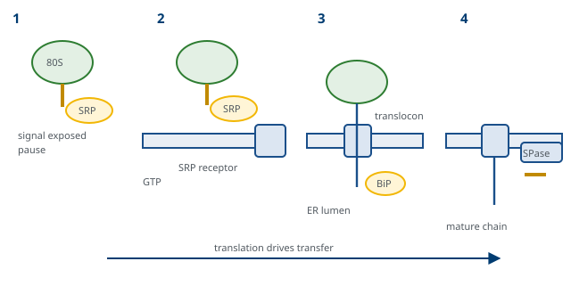
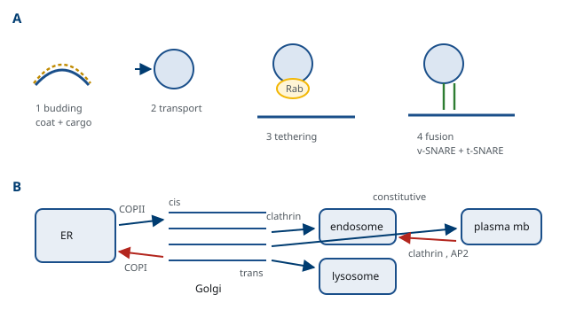

M01-W09-L01 · 인체일반생물학과 기초세포생물학
단백질 표적화와 소포 수송
Protein Targeting and Vesicular Transport
학습목표
- 단백질 표적화의 두 전략을 구분하고 어느 소기관이 어느 전략을 쓰는지 연결한다.
- 신호 가설을 검증한 실험의 논리를 설명하고 signal sequence의 성질을 쓴다.
- SRP와 translocon에 의한 공동 번역 수송의 단계를 순서대로 서술한다.
- 막단백질의 배향이 정해지는 기전을 신호의 종류와 전하 분포로 설명한다.
- 소포 수송의 네 단계를 쓰고 각 단계를 담당하는 단백질군을 짝지어 설명한다.
- COPII·COPI·clathrin 피막의 작용 방향을 구분하고 작은 GTPase가 피막 조립을 조절하는 방식을 쓴다.
- Golgi에서 일어나는 당 사슬 가공과 분류를 설명하고 두 가지 분비 양식을 구분한다.
- 수용체 매개 endocytosis의 단계를 쓰고 endosome의 산성화가 하는 일을 설명한다.
- Lysosome 효소의 표적화 기전을 쓰고 lysosome 축적 질환의 분류와 치료 전략을 설명한다.
- 분비 경로를 표적으로 하는 독소와 병원체의 전략을 들고 그 분자적 근거를 쓴다.
선수지식
- M01-W07-L03 단백질 합성: ribosome과 번역의 단계 — 번역과 동시에 일어나는 과정, exit tunnel
- M01-W08-L01 번역 후 가공, 단백질 접힘과 분해 — 소포체의 품질 관리, 당 사슬과 지질의 부가, ERAD
- M01-W08-L03 핵과 핵-세포질 수송 — 신호와 수용체에 의한 표적화의 일반 원리
- M01-W05-L02 생체분자와 막의 구조 — 인지질 이중층, 막단백질의 배치, 소수성
강의 구성
- 1. 표적화 문제와 두 가지 전략
- 2. 신호 가설과 소포체로의 공동 번역 수송
- 3. 막단백질의 삽입과 배향
- 4. 소포 수송의 일반 원리
- 5. 소포체에서 Golgi로, 그리고 Golgi의 구조
- 6. 분류와 분비 — 신호로 목적지를 정한다
- 7. Endocytosis — 안으로 들여오는 경로
- 8. Lysosome과 축적 질환
- 9. 분비 경로를 표적으로 하는 독소와 병원체
- 10. 연결
1. 표적화 문제와 두 가지 전략
세포질의 ribosome에서 만들어진 단백질은 자신이 가야 할 곳을 어떻게 아는가. 사람 세포가 만드는 단백질의 절반 가까이가 세포질이 아닌 곳에서 일한다. 소포체 내강, Golgi, lysosome, 세포 표면, 세포 밖, 미토콘드리아, 핵이 모두 목적지다. 주소가 잘못되면 단백질은 기능하지 못하고, 잘못된 곳에서 해를 주기도 한다.
해답의 일반 형식은 M01-W08-L03의 핵 수송에서 이미 보았다. 단백질이 주소를 서열로 가지고 있고, 그 주소를 읽는 수용체가 있다. 이 수업은 그 형식이 소포체와 그 뒤의 경로에서 어떻게 구현되는지를 다룬다.
구현에는 두 전략이 있고, 둘의 차이가 이 분야를 이해하는 첫 번째 축이다.
공동 번역 수송(cotranslational translocation). 번역이 진행되는 동안 사슬이 막을 통과한다. 소포체가 이 방식을 쓴다. 사슬이 접히기 전에 통과하므로 좁은 통로를 지날 수 있고, 통과와 접힘이 분리되지 않는다.
번역 후 수송(posttranslational translocation). 사슬이 세포질에서 완성된 뒤 목적지로 간다. 미토콘드리아, 퍼옥시좀, 핵, 엽록체가 이 방식을 쓴다. 완성된 단백질을 다루므로 운반 중에 접힘을 억제하거나(미토콘드리아) 접힌 상태로 통째로 들여보내는(핵, 퍼옥시좀) 장치가 필요하다.
두 전략의 차이에서 신호의 성질도 갈린다.
| 항목 | 소포체(공동 번역) | 핵(번역 후) | 미토콘드리아(번역 후) |
|---|---|---|---|
| 신호의 위치 | 대개 N 말단 | 어디든 | 대개 N 말단 |
| 신호의 성질 | 소수성 구간 | 염기성 잔기 집단 | 양전하와 소수성이 번갈아 배치 |
| 수송 뒤 신호 | 잘려 나간다 | 남는다 | 대개 잘려 나간다 |
| 사슬의 상태 | 펴진 상태로 통과 | 접힌 상태로 통과 | 펴진 상태로 통과 |
| 통로의 성질 | 좁은 단백질 통로 | 넓은 핵공 | 좁은 단백질 통로 |
표에서 하나의 규칙이 보인다. 좁은 통로를 지나는 경로는 사슬을 펴야 하고, 신호를 다시 쓸 일이 없으므로 신호를 잘라 낸다. 핵은 통로가 넓어 접힌 단백질이 지나가고, 분열마다 다시 들어가야 하므로 신호를 남긴다. 미토콘드리아와 퍼옥시좀의 표적화는 M01-W10-L01에서 다룬다.
2. 신호 가설과 소포체로의 공동 번역 수송
1970년대에 Günter Blobel이 제안한 신호 가설(signal hypothesis)이 이 분야의 출발점이다. 내용은 두 문장으로 요약된다. 분비 단백질은 N 말단에 소포체로 가라는 신호를 가지고 합성되며, 그 신호가 ribosome을 소포체 막으로 데려가 사슬이 번역과 동시에 막을 통과하게 한다.
검증에 쓰인 실험의 논리가 중요하다. 시험관에서 분비 단백질의 mRNA를 번역하면 세포에서 얻은 성숙 단백질보다 약 20잔기 긴 산물이 나온다. 같은 반응에 소포체에서 분리한 막 소포(microsome)를 넣으면 산물의 길이가 성숙 단백질과 같아지고, 그 산물은 protease를 넣어도 분해되지 않는다. 소포 안으로 들어가 보호되었다는 뜻이다. 결정적인 것은 순서다. 번역이 끝난 뒤에 microsome을 넣으면 산물은 짧아지지도 않고 보호되지도 않는다. 통과는 번역이 진행되는 동안에만 가능하다.
수송의 단계는 다음과 같다.
- 신호서열의 노출. 사슬의 N 말단이 ribosome의 exit tunnel을 나오면 15~30잔기의 소수성 구간이 드러난다. 이 구간은 대개 중앙에 leucine과 다른 소수성 잔기가 몰려 있고 N 말단 쪽에 양전하 잔기가 있다. 서열이 정해져 있지 않고 성질만 보존되어 있다는 점이 특징이다. 소수성 중심을 가진 어떤 서열이든 작동한다.
- SRP의 결합. Signal recognition particle(SRP)은 RNA 한 분자와 여섯 개의 단백질로 된 복합체다. SRP가 신호서열에 결합하면 번역이 일시적으로 느려진다. 이 정지가 하는 일이 분명하다. 사슬이 세포질에서 다 만들어져 접혀 버리기 전에 막으로 갈 시간을 번다.
- 막으로의 도킹. SRP가 소포체 막의 SRP 수용체와 결합한다. 두 분자 모두 GTP 결합 단백질이며, GTP가 결합한 상태에서 서로를 인식하고 GTP를 가수분해하면 떨어진다. 즉 SRP의 작용 주기도 GTP의 결합과 가수분해로 조절된다.
- Translocon으로의 인계. Ribosome이 막의 통로 복합체인 translocon(Sec61 복합체)에 얹히고, SRP는 떨어져 다음 사슬을 받으러 간다. 번역이 다시 빨라진다.
- 통과. 신호서열이 translocon의 통로를 열고, 사슬이 통로를 지나 내강으로 들어간다. 통로는 평소에 작은 마개로 닫혀 있고 신호서열이 그 마개를 밀어낸다. 통과의 추진력은 번역 자체, 즉 ribosome이 사슬을 밀어내는 힘이다. 세포질 쪽에서 밀고, 내강 쪽에서는 chaperone BiP가 들어온 사슬을 붙잡아 되돌아가지 못하게 한다.
- 신호의 제거. 막의 내강 쪽에 붙은 signal peptidase가 신호서열을 끊어 낸다. 잘린 신호서열은 막 안에서 분해된다.

세균도 같은 원리를 쓰지만 구현이 조금 다르다. 세균의 SecYEG 통로는 translocon과 상동이고, 통과의 추진력으로 번역 외에 SecA라는 ATPase가 사슬을 밀어 넣는 방식도 쓴다. 즉 번역 후 수송 경로가 함께 존재한다. 통로 단백질이 세균에서 사람까지 보존되어 있다는 사실은 이 기구가 매우 오래되었음을 뜻한다.
3. 막단백질의 삽입과 배향
분비 단백질은 사슬 전체가 내강으로 들어간다. 막단백질은 일부가 막에 남아야 하므로 추가 장치가 필요하다. 원리는 두 종류의 신호와 그 조합으로 설명된다.
- Signal anchor sequence: 소수성 구간이 통로를 열지만 잘려 나가지 않고 막에 측면으로 빠져나가 막관통 구간이 된다.
- Stop-transfer sequence: 사슬 중간의 소수성 구간이 통과를 멈추고 막으로 빠져나간다. 그 뒤의 사슬은 세포질에 남는다.
두 신호의 조합으로 배향이 정해진다. N 말단 신호서열로 시작해 중간에 stop-transfer가 있으면 N 말단이 내강, C 말단이 세포질에 놓인다. Signal anchor 하나만 있으면 그 구간의 전하 분포가 배향을 정한다. Signal anchor의 양쪽 가운데 양전하가 많은 쪽이 세포질에 남는다는 규칙이 있는데(positive-inside rule), 막의 세포질 쪽 면이 음전하 인지질을 많이 가지기 때문으로 해석된다. 여러 번 막을 통과하는 단백질에서는 signal anchor와 stop-transfer가 번갈아 작동해 사슬이 막을 지그재그로 오간다. G protein 결합 수용체처럼 일곱 번 통과하는 단백질이 그 예다.
배향이 정해진 뒤에는 바뀌지 않는다. 그래서 막단백질의 어느 면이 세포 밖을 향하는지가 소포체에서 결정되고, 그 배향이 소포 수송을 거쳐 세포막까지 그대로 유지된다. 소포체 내강 쪽 면이 결국 세포 밖을 향하게 되는데, 소포가 출아하고 융합하는 과정에서 막의 안팎이 뒤집히지 않기 때문이다. 이 사실의 결과가 하나 있다. 당 사슬은 언제나 세포 밖 또는 내강 쪽에만 붙는다. 당을 붙이는 효소가 내강 쪽에 있기 때문이고, 세포질 쪽에는 O-GlcNAc 같은 다른 종류의 당 수식만 있다.
막에 꽂히는 방식이 하나 더 있다. 꼬리 고정 단백질(tail-anchored protein)은 막관통 구간이 C 말단에 아주 가까이 있어, 그 구간이 ribosome을 떠날 때 번역이 이미 끝나 있다. SRP가 작동할 수 없으므로 전용 경로(GET/TRC40 경로)가 완성된 단백질을 받아 막에 꽂는다. SNARE 단백질과 세포사멸 조절 단백질의 상당수가 이 부류다. 신호의 위치가 수송 전략을 강제한다는 점을 보여 주는 예다.
꼬리 고정 단백질 외에 하나 더 알아 둘 부류가 있다. 소포체 막에 꽂혀 있으면서 막관통 구간이 쐐기 모양이라 막을 구부리는 데 관여하는 단백질, 그리고 translocon을 거치지 않고 다른 삽입 효소(EMC, 일부 TMEM 계열)에 의해 막에 꽂히는 단백질이다. 특히 막관통 구간의 소수성이 약한 단백질은 Sec61 통로의 측면 문으로 잘 빠져나가지 못해 전용 삽입 기구를 쓴다. 즉 막단백질의 삽입 경로도 하나가 아니고, 그 단백질의 물리적 성질이 경로를 정한다. 이 기구들의 결손이 특정 막단백질군의 발현만 떨어뜨리는 질환으로 보고되기 시작했다.
4. 소포 수송의 일반 원리
소포체에 들어간 단백질이 Golgi를 거쳐 세포 표면이나 lysosome에 이르는 과정은 막으로 둘러싸인 소포가 떨어져 나와 다음 구획과 융합하는 방식으로 일어난다. 경로가 여러 개지만 모든 단계가 같은 네 단계를 거친다. 이 공통 골격을 먼저 세우면 개별 경로는 그 변형으로 읽힌다.
1단계: 피막 조립과 출아(budding). 막의 한 부분이 바깥으로 부풀어 소포가 떨어져 나온다. 이 변형을 만드는 것이 피막 단백질(coat protein)이다. 피막은 두 가지 일을 한다. 막을 구부려 소포를 만들고, 실어야 할 화물을 골라 모은다. 즉 모양을 만드는 일과 화물을 고르는 일이 같은 장치에 묶여 있다.
2단계: 운반. 떨어진 소포가 세포골격을 따라 목적지로 옮겨진다. Microtubule과 운동 단백질이 이 일을 한다(M01-W10-L02).
3단계: 표적 인식과 결합(tethering). 소포가 목적지 막을 알아보고 느슨하게 붙는다. Rab 계열의 작은 GTPase가 이 단계의 주역이다. 사람에게 60종이 넘는 Rab이 있고, 구획마다 서로 다른 Rab이 붙어 있어 구획의 신분증 역할을 한다. 활성 상태의 Rab이 긴 tethering 단백질을 통해 소포를 끌어당긴다.
4단계: 융합. 두 막이 하나로 합쳐지고 화물이 목적지 내강으로 들어간다. 이 단계를 수행하는 것이 SNARE 단백질이다. 소포 쪽의 v-SNARE와 표적막 쪽의 t-SNARE가 서로 꼬여 네 가닥 다발을 이루며, 꼬이는 과정에서 생기는 에너지가 두 막을 억지로 가까이 끌어당겨 융합을 일으킨다. 융합이 끝난 SNARE 다발은 매우 안정하므로, ATP를 쓰는 NSF라는 단백질이 다발을 풀어 SNARE를 재사용 가능한 상태로 되돌린다.
특이성은 두 단계에서 이중으로 확보된다. Rab과 tethering 인자가 먼저 걸러내고, SNARE 짝짓기가 다시 걸러낸다. 두 층의 검문이 있어야 수십 가지 소포가 뒤섞이지 않는다. 핵 수송에서 Ran 기울기 하나가 방향을 정한 것과 비교하면, 소포 수송은 목적지가 여러 개이므로 신분증과 짝짓기라는 조합적 체계를 쓴다는 차이가 보인다.
피막은 세 종류가 주로 쓰이고, 작용하는 구간과 방향이 다르다.
| 피막 | 출발 → 도착 | 조절 GTPase | 주된 화물 |
|---|---|---|---|
| COPII | 소포체 → Golgi | Sar1 | 분비·막 단백질, 소포체를 떠나는 모든 화물 |
| COPI | Golgi → 소포체, Golgi 내부의 역방향 | Arf1 | 소포체로 되돌릴 단백질, Golgi 효소 |
| Clathrin | Golgi → endosome·lysosome, 세포막 → endosome | Arf1(Golgi), 세포막에서는 다른 조절 | lysosome 효소, 수용체 매개 endocytosis의 화물 |
용어를 분명히 해 둔다. 소포체에서 Golgi를 거쳐 세포막으로 가는 방향을 anterograde, 되돌아오는 방향을 retrograde라 한다. 두 방향이 모두 끊임없이 일어나므로, 각 구획의 크기와 구성은 들어오는 양과 나가는 양의 균형으로 유지된다. 한쪽 방향만 막아도 구획의 형태가 무너지는 이유가 이것이다.
피막 조립을 켜고 끄는 방식은 두 GTPase에서 공통이다. Sar1과 Arf1은 GDP 상태에서 세포질에 떠 있고, 막의 교환인자가 GTP로 바꾸어 주면 구조가 바뀌어 소수성 꼬리가 노출되고 막에 꽂힌다. 막에 꽂힌 GTPase가 피막 단위를 모아 조립이 시작된다. 소포가 완성되고 GTP가 가수분해되면 GTPase가 막에서 빠지고 피막이 해체되어 재사용된다. 즉 GTP의 결합과 가수분해가 피막의 조립과 해체의 타이머다. Arf1의 교환인자를 억제하는 곰팡이 독소 brefeldin A를 세포에 처리하면 COPI 소포가 만들어지지 않아 Golgi가 소포체로 흡수되어 사라지는데, 이 극적인 현상이 역방향 수송이 Golgi의 존재 자체를 유지하고 있음을 보여 준다.

5. 소포체에서 Golgi로, 그리고 Golgi의 구조
소포체를 떠나는 단계가 첫 번째 관문이다. 소포체에는 접히지 못한 단백질이 늘 일정량 존재하고(M01-W08-L01), 이들은 COPII 소포에 실리지 않는다. 올바르게 접힌 단백질만 화물 수용체에 인식되어 출아 부위로 모인다. 그래서 "소포체를 떠났다"는 사실이 품질 검사를 통과했다는 뜻이 된다.
COPII 소포는 소포체의 특정 구간(ER exit site)에서 떨어져 나와 서로 융합해 소포체-Golgi 중간 구획을 이루고, 이것이 Golgi의 입구 쪽 면에 전달된다. Golgi는 납작한 주머니(cisterna)가 쌓인 구조이고, 방향이 있다.
- cis 면: 소포체 쪽. 들어오는 화물을 받는다.
- medial: 가운데.
- trans 면과 trans-Golgi network: 세포막 쪽. 화물을 목적지별로 나누어 보낸다.
화물이 cis에서 trans로 이동하는 방식은 두 모형으로 설명되어 왔다. 소포 수송 모형은 주머니가 제자리에 있고 화물이 소포에 실려 다음 주머니로 옮겨진다고 본다. 주머니 성숙 모형은 cis 면에서 새 주머니가 만들어져 전체가 trans 쪽으로 밀려가며, 그 과정에서 각 주머니의 효소 구성이 COPI 역방향 수송으로 교체된다고 본다. 현재는 후자가 주된 방식이고 거대한 화물(콜라겐 섬유, 지단백 입자)에서는 특히 그렇다고 본다. 소포에 들어갈 수 없는 크기의 화물이 Golgi를 통과한다는 사실 자체가 소포 수송 모형만으로는 설명되지 않기 때문이다.
Golgi의 일은 두 가지다.
첫째, 당 사슬의 가공이다. 소포체에서 붙은 N-연결 당 사슬이 Golgi를 지나는 동안 일부 당이 떨어지고 다른 당이 붙어 최종 구조가 완성된다. 효소가 주머니마다 순서대로 배치되어 있어, 화물이 지나가는 순서가 곧 반응의 순서가 된다. 조립 라인과 같은 배치이며, 이 때문에 효소 하나의 결손이 그 이후의 모든 단계를 어긋나게 한다. O-연결 당 사슬의 부가는 Golgi에서 시작되고 끝난다.
둘째, 분류다. trans-Golgi network에서 화물이 목적지별로 다른 소포에 실린다. 목적지는 세 가지다. 세포막(구성적 분비), 분비 과립(조절 분비), lysosome이다.
6. 분류와 분비 — 신호로 목적지를 정한다
trans-Golgi network에서의 분류에도 신호가 쓰인다. 다만 여기서 중요한 사실이 하나 있다. 세포막으로 가는 길에는 신호가 필요하지 않다. 다른 신호가 없는 단백질은 기본 경로로 세포막에 도달하며, 이것을 구성적 분비(constitutive secretion)라 한다. 신호는 기본 경로에서 벗어나야 할 때 필요하다. 이 설계가 효율적인 이유는 분명하다. 대부분의 화물이 가는 곳에는 주소를 적지 않고, 예외에만 주소를 적는다.
주소가 필요한 경우를 정리한다.
| 목적지 | 신호 | 수용체와 기전 |
|---|---|---|
| 소포체로 되돌리기(내강 단백질) | C 말단 KDEL | KDEL 수용체가 Golgi에서 붙잡아 COPI 소포로 되돌린다 |
| 소포체로 되돌리기(막단백질) | C 말단 KKXX | COPI 피막이 직접 인식한다 |
| Lysosome | mannose-6-phosphate | M6P 수용체가 trans-Golgi에서 분류해 clathrin 소포로 보낸다 |
| 분비 과립 | 응집을 일으키는 성질과 특정 서열 | 과립 안의 산성·고농도 조건에서 응집해 남는다 |
KDEL 수용체의 작동 방식에 원리가 있다. 이 수용체는 pH에 따라 친화도가 바뀐다. Golgi는 소포체보다 산성이므로 Golgi에서는 KDEL을 붙잡고, 소포체로 돌아와 pH가 올라가면 놓는다. 즉 구획 사이의 pH 차이가 결합과 해리의 위치를 정한다. 핵 수송에서 Ran-GTP 기울기가 같은 일을 한 것과 같은 전략이며, 뒤에 나올 M6P 수용체와 LDL 수용체도 같은 방식을 쓴다. 수송 체계는 거의 언제나 "어디서 잡고 어디서 놓을지"를 물리적 기울기로 고정한다.
분비의 두 양식을 구분한다.
- 구성적 분비: 신호 없이 계속 일어난다. 소포가 만들어지는 대로 세포막과 융합한다. 세포외기질 단백질, 혈장 단백질, 막단백질의 공급이 이 방식이다.
- 조절 분비(regulated secretion): 화물을 분비 과립에 모아 두었다가 신호가 올 때 한꺼번에 방출한다. Insulin, 소화 효소, 신경전달물질이 이 방식이다. 방아쇠는 대개 세포 내 Ca²⁺ 농도의 상승이고, Ca²⁺을 감지하는 단백질(synaptotagmin)이 SNARE 융합을 허가한다. 과립을 미리 채워 두는 설계의 이점은 반응 속도다. 자극 후 수십 밀리초 안에 방출이 일어난다.
조절 분비를 하는 세포에서는 화물이 과립 안에서 더 가공되기도 한다. M01-W08-L01에서 다룬 proinsulin의 C-peptide 절단이 분비 과립에서 일어나며, 과립 내부의 낮은 pH가 proprotein convertase의 작동 조건이다. 즉 가공의 마지막 단계가 분비 직전에 완료된다.
Golgi가 가진 또 하나의 성질은 구획마다 pH가 다르다는 것이다. cis에서 trans로 갈수록 내강이 산성이 되고, trans-Golgi network는 pH 약 6.0이다. 이 기울기는 막의 proton pump가 만들며, 두 가지 일을 한다. 첫째, 각 주머니의 효소가 그 pH에서 최적으로 작동하도록 반응 조건을 맞춘다. 둘째, 다음 절에서 볼 분류 수용체가 어디서 화물을 잡고 어디서 놓을지를 지정한다. 뒤이어 endosome과 lysosome으로 가면서 pH가 더 내려가므로, 분비 경로 전체가 하나의 연속된 산성화 기울기를 이룬다고 볼 수 있다. 세포가 이 기울기를 수송의 좌표로 쓰는 것이며, proton pump를 억제하는 약물(bafilomycin)을 처리하면 이 좌표가 사라져 분류와 재순환이 함께 멈춘다.
7. Endocytosis — 안으로 들여오는 경로
지금까지는 밖으로 나가는 방향이었다. 반대 방향도 소포로 일어난다. 세포막의 일부가 안으로 함몰되어 소포가 되어 떨어지는 과정이 endocytosis다. 양식이 여러 가지다.
- Phagocytosis: 큰 입자나 세포를 삼킨다. 대식세포와 호중구가 수행하며, 액틴 세포골격이 막을 밀어 올린다.
- Pinocytosis(거대 액포 형성 포함): 세포 밖 액체를 비선택적으로 들여온다.
- 수용체 매개 endocytosis: 특정 분자를 선택적으로, 농축해 들여온다. 이 절의 주제다.
수용체 매개 endocytosis의 단계
- 리간드가 세포막의 수용체에 결합한다.
- 수용체의 세포질 쪽 꼬리에 있는 신호(대개 tyrosine이나 이중 leucine을 포함한 짧은 서열)가 어댑터 단백질 AP2에 인식되고, AP2가 clathrin을 모아 clathrin 피막 함몰부(coated pit)를 만든다.
- 함몰부가 깊어지고 목이 좁아지면 dynamin이 목을 고리처럼 둘러싸고 GTP를 가수분해하며 막을 끊어 소포를 떼어 낸다.
- 피막이 해체되고 소포가 early endosome과 융합한다.
- Endosome의 막에 있는 proton pump가 내부를 산성화한다(early endosome pH 약 6.0, late endosome 5.5 이하).
- 산성 pH에서 리간드가 수용체에서 떨어진다. 수용체는 재순환 소포에 실려 세포막으로 되돌아가고, 리간드는 late endosome을 거쳐 lysosome으로 가서 분해된다.
5번과 6번이 이 경로의 핵심이다. 수용체를 재사용하려면 리간드를 어딘가에서 놓아야 하고, 그 "어딘가"를 pH로 지정한다. LDL 수용체는 한 번 만들어져 수백 번 왕복한다. 앞 절의 KDEL 수용체와 완전히 같은 전략이다.
재순환의 갈림길도 정해져 있다. Early endosome에서 수용체가 세포막으로 되돌아가거나(재순환), 반대쪽 막으로 운반되거나(상피세포의 transcytosis), lysosome으로 보내진다. 세 갈래를 정하는 것은 수용체 꼬리의 신호와 ubiquitin 표지다. 성장인자 수용체가 과도하게 활성화되면 ubiquitin이 붙어 분해 쪽으로 분류되며, 이것이 신호를 끄는 수단이 된다(M01-W11-L02).
8. Lysosome과 축적 질환
Lysosome은 약 60종의 가수분해 효소를 담은 산성 구획이다. 내부 pH는 약 4.5~5.0으로, 막의 proton pump가 ATP를 써서 유지한다. 효소들은 모두 산성 pH에서 최적 활성을 가지는 acid hydrolase이고, 이 성질 자체가 안전장치다. 막이 터져 효소가 세포질로 새어 나와도 중성 pH에서는 활성이 낮다.
Lysosome에 들어오는 물질의 경로는 세 가지다. Endocytosis로 들어온 외부 물질, phagocytosis로 삼킨 입자, 그리고 autophagy로 감싼 자기 세포질과 소기관이다. 분해 산물(아미노산, 당, nucleotide, 지방산)은 전용 수송체로 세포질로 나가 재사용된다. 즉 lysosome은 분해와 재활용을 담당하는 구획이다.
효소를 lysosome으로 보내는 기전은 앞에서 다룬 mannose-6-phosphate 경로다. 소포체에서 N-연결 당 사슬을 받은 가수분해 효소가 cis-Golgi에서 GlcNAc phosphotransferase에 의해 mannose에 phosphate를 받고, trans-Golgi에서 M6P 수용체가 이를 읽어 clathrin 소포로 분류한다. Late endosome의 산성 환경에서 효소가 수용체에서 떨어지고, 수용체는 Golgi로 되돌아간다. 여기서도 pH가 결합과 해리의 위치를 정한다.
Lysosome의 기능 결손은 기질이 쌓이는 질환이 된다. 분류의 축이 세 가지다.
| 결손 부위 | 결과 | 예 |
|---|---|---|
| 특정 가수분해 효소 | 그 효소의 기질만 쌓인다 | Gaucher(glucocerebrosidase), Tay–Sachs(hexosaminidase A), Fabry(α-galactosidase A), Pompe(acid α-glucosidase) |
| 효소의 표적화 기구 | 여러 효소가 lysosome에 도달하지 못한다 | I-cell disease(GlcNAc phosphotransferase) |
| 분해 산물의 수송체 또는 막단백질 | 분해는 되지만 산물이 나가지 못한다 | cystinosis(cystine 수송체), Niemann–Pick C(cholesterol 이동) |
효소 자체가 아니라 lysosome 막의 단백질이 망가진 경우도 같은 질환군에 들어간다. Danon 병의 LAMP2 결손은 autophagy 소포와 lysosome의 융합을 어긋나게 해 심근병증과 근육병을 만들고, mucolipidosis IV의 TRPML1 결손은 lysosome의 이온 항상성을 망가뜨린다. 그래서 축적 질환을 분류할 때는 효소, 표적화, 수송체, 막단백질, 그리고 융합 기구까지 다섯 층을 함께 놓고 본다. "기질이 쌓였다"는 소견 하나에서 결손의 층을 추론하는 것이 진단의 논리다.
Lysosome은 수동적인 처리장이 아니다. 영양 상태를 감지하는 신호 중심이기도 하다. mTORC1이 lysosome 막 위에서 활성화된다. 아미노산이 충분하면 lysosome 막에 mTORC1이 모여 활성화되어 성장을 촉진하고 autophagy를 억제하며, 아미노산이 부족하면 mTORC1이 막에서 떨어져 비활성화되고 전사인자 TFEB가 핵으로 들어가 lysosome과 autophagy 유전자를 켠다. 즉 분해 구획이 분해의 필요를 스스로 감지해 자기 수를 조절한다. 이 축은 M01-W11-L02와 M01-W12-L02에서 다시 다룬다.
세포가 lysosome의 수를 늘리는 방식에는 두 단계가 있다. 짧은 시간에는 이미 있는 lysosome의 융합 능력과 위치가 바뀌고, 긴 시간에는 TFEB가 전사를 켜서 새 효소와 막단백질을 공급한다. 영양 결핍, 운동, 특정 약물이 이 축을 활성화한다는 보고가 있고, 축적 질환과 신경퇴행에서 분해 용량 자체를 올리려는 치료 전략의 근거로 제시된다. 다만 autophagy를 전반적으로 올리는 것이 언제나 유익한지는 확립되지 않았다. 종양에서는 같은 반응이 생존을 돕는 쪽으로 작동할 수 있기 때문이다.
9. 분비 경로를 표적으로 하는 독소와 병원체
수송 경로의 각 단계가 표적이 된다. 기전을 단계별로 정리하면 서로 다른 독소가 하나의 틀로 보인다.
경로를 거꾸로 타고 들어오는 독소. Cholera toxin과 Shiga toxin은 세포 표면의 당지질에 결합해 endocytosis로 들어온 뒤, 분비 경로를 역방향으로 거슬러 Golgi를 거쳐 소포체에 이른다. 거기서 독소의 활성 부분이 ERAD의 역수송 통로를 이용해 세포질로 나온다. 즉 세포가 잘못 접힌 단백질을 버리기 위해 가진 통로를 독소가 침입 경로로 쓴다. 세포질에 나온 cholera toxin은 Gs 단백질에 ADP-ribose를 붙여 영구히 활성화시켜 cAMP를 올리고, 그 결과 장 상피에서 Cl⁻과 물이 대량 분비되어 설사가 일어난다. Shiga toxin은 28S rRNA의 adenine을 떼어 번역을 멈춘다(M01-W07-L03).
융합 단계를 끊는 독소. Botulinum toxin과 tetanus toxin은 SNARE 단백질을 자르는 protease다. 둘 다 같은 분자 표적을 가지는데 임상 양상이 반대인 이유는 작용하는 시냅스의 종류가 다르기 때문이다. Botulinum toxin은 말초 신경근 접합부의 운동신경 말단에 작용해 acetylcholine 방출을 막아 이완성 마비를 만들고, tetanus toxin은 척수의 억제성 중간신경세포에 작용해 glycine과 GABA의 방출을 막아 억제가 풀린 경직성 마비를 만든다. 같은 기전, 다른 회로, 반대 증상이라는 구조이며, 이 때문에 botulinum toxin은 국소 주사로 근육의 과활동을 치료하는 약으로 쓰인다.
수송 기구를 끌어 쓰는 바이러스. 외피를 가진 바이러스는 자기 막단백질을 소포체와 Golgi를 거쳐 세포 표면으로 보내고, 그 과정에서 숙주의 당 사슬 가공과 furin 절단을 이용한다(M01-W08-L01). 반대로 숙주의 항원 제시를 막기 위해 MHC 분자를 소포체에 억류하거나 ERAD로 보내는 바이러스 단백질도 여러 개 알려져 있다.
소포 수송은 세포가 자기 막의 양을 유지하는 문제와도 묶여 있다. 세포막의 면적은 분비 소포가 융합하면 늘고 endocytosis가 일어나면 줄어든다. 두 흐름의 균형이 맞지 않으면 세포 모양이 유지되지 않으므로, 분비가 왕성한 세포에서는 그만큼 회수도 활발하다. 신경 말단이 극단적인 예다. 자극 한 번에 수백 개의 시냅스 소포가 세포막과 융합하므로, 같은 수의 소포를 즉시 회수해 다시 채워야 반복 자극을 견딘다. 그래서 신경 말단에는 clathrin 매개 회수 외에도 융합한 소포가 완전히 펴지기 전에 구멍만 닫고 그대로 떨어져 나오는 빠른 회수 방식이 있다고 제안되어 있다. 분비와 회수가 양적으로 짝지어져 있다는 점은 수송 경로의 어느 한쪽을 억제했을 때 반대쪽 구획까지 영향을 받는 이유를 설명한다.
10. 연결
이 수업은 단백질이 소포체에 들어가 목적지에 이르는 길을 다루었다. 그 길의 앞과 뒤, 그리고 다른 소기관의 경로는 다음 수업에 있다.
- M01-W07-L03 단백질 합성 — 번역과 동시에 일어나는 과정의 목록, 그리고 SRP가 번역을 늦추는 지점을 다룬다.
- M01-W08-L01 번역 후 가공·접힘·분해 — 소포체 내강에서의 접힘과 당 사슬에 의한 품질 관리, ERAD와 역수송, 그리고 GPI anchor의 부가를 다룬다. 이 수업의 "소포체를 떠나는 것이 품질 검사의 통과"라는 서술의 앞쪽이 거기에 있다.
- M01-W08-L03 핵과 핵-세포질 수송 — 신호와 수용체에 의한 표적화의 일반 형식, 그리고 농도 기울기로 결합과 해리의 위치를 고정하는 전략을 다룬다.
- M01-W10-L01 미토콘드리아·엽록체·퍼옥시좀 — 번역 후 수송을 쓰는 세 소기관의 표적화 신호와 통로를 다룬다. 이 수업의 공동 번역 수송과 비교하면 표적화의 일반 원리가 완성된다.
- M01-W10-L02 세포골격과 세포 운동 — 소포가 운반되는 궤도와 운동 단백질, 그리고 endocytosis에서 막을 밀어 올리는 액틴의 작용을 다룬다.
- M01-W10-L03 원형질막과 막수송 — 막의 비대칭, 지질 뗏목, 그리고 수송체와 통로를 다룬다. 이 수업에서 세포 표면에 도달한 막단백질이 거기서 기능으로 다루어진다.
- M01-W11-L02 세포 신호전달 — 수용체의 내재화와 ubiquitin 표지가 신호를 끄는 수단으로 쓰이는 방식, 그리고 mTORC1이 lysosome 막에서 활성화되는 축을 다룬다.
- M01-W12-L02 세포 재생과 사멸 — autophagy의 단계와 lysosome에서의 분해를 다룬다.
- M02-W01-L02 유전 질환의 분자 기전 — LDL 수용체의 변이 분류, lysosome 축적 질환, CDG를 임상 유전학의 틀에서 정리한다.
- M03-W02-L03 지질 대사와 지단백 — LDL 수용체 경로가 cholesterol 항상성의 관점에서 다시 다루어진다.
확인 문항
분비 단백질의 mRNA를 시험관에서 번역하면 세포에서 얻은 성숙 단백질보다 긴 산물이 나온다. 같은 반응에 소포체 유래 막 소포를 넣는 시점을 달리한 두 실험의 결과가 다른 이유를 설명하고, 이 비교가 증명하는 것을 쓰라.
해설
번역을 시작할 때부터 막 소포를 함께 넣으면 산물의 길이가 성숙 단백질과 같아지고 protease를 넣어도 분해되지 않는다. 신호서열이 ribosome에서 나오는 동안 SRP가 인식해 복합체를 막으로 데려가고, 사슬이 번역과 동시에 막을 통과해 소포 안으로 들어가 보호되며, 내강 쪽의 signal peptidase가 신호서열을 잘라 내기 때문이다. 반면 번역이 끝난 뒤에 막 소포를 넣으면 산물은 긴 상태로 남고 protease에 분해된다. 사슬이 이미 세포질에서 완성되어 접혔고 신호서열을 인식할 기회가 지나갔으므로 통과가 일어나지 않는다. 이 비교가 증명하는 것은 두 가지다. 첫째, 긴 산물의 여분 구간이 소포체로 보내는 신호이며 통과 과정에서 제거된다. 둘째, 이 경로는 번역과 동시에만 작동하는 공동 번역 수송이다. 이것이 미토콘드리아나 핵처럼 완성된 단백질을 받는 번역 후 수송과 구별되는 지점이다.
어떤 막단백질이 세포막에서 N 말단은 세포 밖, C 말단은 세포질에 놓인 배향을 가진다. 이 배향이 어떻게 정해지며, 배향이 소포체에서 세포막까지 유지되는 이유를 설명하라.
해설
배향은 소포체에서 삽입될 때 정해진다. N 말단에 잘려 나가는 신호서열이 있어 N 말단 쪽이 내강으로 들어가고, 사슬 중간의 소수성 구간이 stop-transfer로 작동해 통과를 멈추고 막으로 측면 이동하면, 그 뒤의 사슬은 세포질에 남는다. 신호서열이 잘리지 않는 signal anchor 하나만 있는 경우에는 그 구간 양쪽의 전하 분포가 배향을 정하며, 양전하가 많은 쪽이 세포질에 남는 경향이 있다. 배향이 유지되는 이유는 소포가 출아하고 융합하는 과정에서 막의 안팎이 뒤집히지 않기 때문이다. 소포체 내강 쪽 면은 Golgi 내강 쪽 면이 되고, 소포가 세포막과 융합하면 그 면이 세포 밖을 향한다. 결과적으로 소포체 내강에서 일어난 수식은 모두 세포 밖 면에 나타난다. 그래서 N-연결 당 사슬은 언제나 세포 밖 또는 내강 쪽에만 있고, 세포질 쪽에는 당 사슬이 붙지 않는다.
소포 수송에서 소포가 엉뚱한 구획과 융합하지 않는 것은 어떻게 보장되는가. 두 단계로 나누어 설명하고, 핵 수송의 방향 결정과 비교하라.
해설
특이성은 두 단계에서 이중으로 확보된다. 첫째, 표적 인식 단계다. Rab 계열의 작은 GTPase가 구획마다 다르게 배치되어 구획의 신분증으로 작동하고, 활성 상태의 Rab이 긴 tethering 단백질을 통해 맞는 소포만 끌어당긴다. 둘째, 융합 단계다. 소포 쪽의 v-SNARE와 표적막 쪽의 t-SNARE가 짝이 맞을 때만 네 가닥 다발로 꼬이며, 그 과정에서 두 막이 가까워져 융합한다. 두 층을 모두 통과해야 융합이 일어나므로, 수십 가지 소포가 동시에 오가도 뒤섞이지 않는다. 핵 수송과 비교하면 전략이 다르다. 핵 수송은 목적지가 핵과 세포질 둘뿐이므로 Ran-GTP 농도 기울기 하나로 방향이 결정된다. 소포 수송은 목적지가 여러 개이므로 신분증과 짝짓기라는 조합적 체계를 쓴다. 공통점은 작은 GTPase의 결합과 가수분해가 각 단계의 타이머 역할을 한다는 것이다.
Brefeldin A를 세포에 처리하면 Golgi가 사라지고 Golgi 단백질이 소포체에서 발견된다. 이 현상이 분비 경로의 어떤 성질을 보여 주는지 설명하라.
해설
Brefeldin A는 Arf1의 구아닌 뉴클레오타이드 교환인자를 억제한다. Arf1은 GTP를 받아 막에 꽂혀 COPI 피막의 조립을 시작하는 단백질이므로, 억제되면 COPI 소포가 만들어지지 않는다. COPI는 Golgi에서 소포체로 되돌아가는 역방향 수송을 담당한다. 그런데 소포체에서 Golgi로 가는 anterograde 수송은 COPII가 담당하므로 계속 일어난다. 결과적으로 Golgi로 들어가는 흐름은 유지되고 나오는 흐름만 끊겨, Golgi의 막과 단백질이 소포체로 흡수되어 Golgi가 형태를 잃는다. 이 현상이 보여 주는 성질은 두 가지다. 첫째, Golgi는 고정된 구조물이 아니라 들어오는 양과 나가는 양의 균형으로 유지되는 동적 정상 상태다. 한 방향만 막아도 형태가 무너진다. 둘째, 피막의 조립은 작은 GTPase의 GTP 결합으로 켜지므로, 그 교환인자를 억제하는 것만으로 특정 방향의 수송을 선택적으로 끊을 수 있다.
KDEL 수용체와 LDL 수용체, mannose-6-phosphate 수용체가 공유하는 작동 원리를 설명하고, 이 원리가 수송 체계에서 왜 반복해 쓰이는지 쓰라.
해설
세 수용체 모두 pH에 따라 리간드에 대한 친화도가 달라지는 성질로 작동한다. KDEL 수용체는 상대적으로 산성인 Golgi에서 KDEL 서열을 붙잡고, 중성에 가까운 소포체로 돌아오면 놓는다. M6P 수용체는 중성에 가까운 trans-Golgi에서 효소를 붙잡고, 산성인 late endosome에서 놓는다. LDL 수용체는 중성인 세포 표면에서 LDL을 붙잡고, 산성인 endosome에서 놓는다. 이 원리가 반복되는 이유는 수용체를 재사용하기 위해서다. 수용체가 한 번 쓰고 버려지는 것이라면 잡기만 하면 되지만, 수백 번 왕복하려면 정해진 장소에서 반드시 놓아야 한다. 그 장소를 지정하는 데 구획 사이에 이미 존재하는 pH 차이를 쓰는 것이 가장 경제적이다. 같은 논리의 다른 구현이 핵 수송의 Ran-GTP 기울기이며, 거기서도 결합과 해리의 위치가 기울기로 고정된다. 요점은 수송 체계가 방향성을 만들 때 기질을 밀어내는 펌프를 쓰지 않고 결합과 해리의 위치를 물리적 기울기로 고정한다는 것이다.
가족성 고콜레스테롤혈증 환자에서 LDL 수용체 단백질은 정상 크기로 만들어지지만 세포 표면에서 검출되지 않고, 세포 안에서 당 사슬이 성숙되지 않은 형태로 발견되었다. 어느 단계의 결함인지 판정하고 근거와 치료적 함의를 쓰라.
해설
소포체에서 Golgi로 가는 수송 단계의 결함이다. 근거는 당 사슬의 성숙 여부다. N-연결 당 사슬은 소포체에서 붙고 Golgi를 지나는 동안 다듬어져 최종 구조가 완성되므로, 당 사슬이 미성숙한 상태라는 것은 그 단백질이 Golgi에 도달하지 못했다는 뜻이다. 즉 변이 단백질이 소포체에서 올바르게 접히지 못해 품질 관리에 걸려 COPII 소포에 실리지 못하고, ERAD로 분해되는 경로에 놓인 것이다. 이것이 LDLR 변이 가운데 가장 흔한 부류다. 치료적 함의는 두 가지다. 첫째, 세포 표면에 수용체가 거의 없으므로 LDL 제거 능력이 크게 떨어지고, statin처럼 세포가 수용체를 더 만들게 하는 약은 만들어진 수용체도 같은 이유로 막히므로 효과가 제한적이다. 둘째, 접힘을 돕거나 품질 관리를 느슨하게 하는 접근, 그리고 수용체에 의존하지 않는 경로를 겨냥한 치료(지단백 생산을 줄이는 약, 지단백 분리술)가 필요하다. PCSK9 억제제는 기존 수용체의 분해를 막아 수명을 늘리는 약이므로 수용체가 일부라도 기능하는 경우에 효과가 있다.
Cholera toxin이 세포질에 도달하는 경로를 설명하고, 이 경로가 세포의 어떤 기구를 이용하는지 쓰라.
해설
Cholera toxin은 세포 표면의 당지질 GM1에 결합해 endocytosis로 세포 안에 들어온다. 이후 분비 경로를 역방향으로 거슬러 endosome에서 Golgi로, Golgi에서 소포체로 이동한다. 소포체에 도달한 독소의 활성 소단위는 잘못 접힌 단백질로 인식되어, 세포가 그런 단백질을 세포질로 끌어내 분해하기 위해 가진 ERAD의 역수송 통로를 통해 세포질로 나온다. 즉 독소는 세포의 품질 관리 기구를 침입 경로로 역이용한다. 세포질에 나온 활성 소단위는 Gs 단백질의 α 소단위에 ADP-ribose를 붙여 GTP 가수분해를 막는다. Gs가 영구히 활성 상태로 남아 adenylyl cyclase를 계속 자극하므로 cAMP가 크게 올라가고, 장 상피에서 Cl⁻ 분비가 증가해 물이 따라 나와 대량의 수성 설사가 생긴다. 치료의 핵심이 수분과 전해질 보충인 이유는 독소가 세포를 죽이는 것이 아니라 수송을 과활성화하기 때문이다.
Botulinum toxin과 tetanus toxin은 같은 종류의 분자 표적을 가지는데 임상 양상이 반대다. 이유를 설명하고, 이 기전이 치료에 이용되는 방식을 쓰라.
해설
두 독소 모두 SNARE 단백질을 자르는 protease로, 신경 말단에서 시냅스 소포가 세포막과 융합하는 단계를 막아 신경전달물질 방출을 차단한다. 임상 양상이 반대인 이유는 작용하는 시냅스가 다르기 때문이다. Botulinum toxin은 말초 신경근 접합부의 운동신경 말단에 작용해 acetylcholine 방출을 막으므로 근육이 수축하지 못하는 이완성 마비가 생기고, 호흡근이 침범되면 치명적이다. Tetanus toxin은 축삭을 거슬러 척수로 이동해 억제성 중간신경세포에 작용하고, glycine과 GABA의 방출을 막는다. 운동신경세포에 대한 억제가 풀리므로 근육이 과도하게 수축하는 경직성 마비와 opisthotonus, trismus가 나타난다. 같은 기전이지만 끊는 회로가 억제성인지 흥분성인지가 결과를 뒤집는다. 치료 응용은 botulinum toxin 쪽이다. 국소 주사하면 그 근육의 신경근 접합부만 차단되므로, 근육의 과활동이 문제인 상태(경부 사경, 눈꺼풀 경련, 경직, 과다 발한, 편두통 예방, 미용)에서 쓰인다. 효과가 수개월 뒤 사라지는 것은 신경 말단이 새 분지를 내어 접합부를 다시 만들기 때문이다.
효소 대체 요법이 Gaucher 병에서는 간비대와 혈구 감소를 개선하지만 Tay–Sachs 병에는 쓰이지 않는다. 이유를 lysosome 효소의 표적화 기전과 연결해 설명하라.
해설
효소 대체 요법은 정맥으로 투여한 효소가 세포 표면의 수용체에 결합해 endocytosis로 들어가 lysosome에 도달하는 경로에 의존한다. 흡수는 주로 mannose-6-phosphate 수용체나 대식세포의 mannose 수용체를 통해 일어나므로, 혈류에 잘 노출되고 그 수용체를 많이 가진 세포에서 효율이 높다. Gaucher 병에서 기질이 쌓이는 주된 세포는 간, 비장, 골수의 대식세포이고 이들은 혈류에 직접 접하며 흡수 수용체가 풍부하므로, 투여한 효소가 잘 도달해 간비대·비장비대와 혈구 감소가 개선된다. Tay–Sachs 병은 중추신경계의 신경세포에 GM2 ganglioside가 쌓이는 질환인데, 투여한 효소는 혈액뇌장벽을 통과하지 못해 신경세포에 도달하지 못한다. 그래서 효소 대체 요법이 의미 있는 효과를 주지 못한다. 같은 제약이 뼈와 심장처럼 혈류 접근이 제한된 조직에도 적용된다. 대안으로는 기질의 합성을 줄이는 기질 감소 요법, 잔여 효소의 접힘을 돕는 chaperone, 뇌척수액 내 직접 투여, 그리고 조혈모세포 이식이나 유전자 치료가 검토된다.
어떤 세포에서 clathrin 매개 endocytosis를 선택적으로 막았을 때 나타날 변화를 두 가지 들고, dynamin의 기능을 그 맥락에서 설명하라.
해설
첫째, 수용체 매개 흡수가 멈춘다. LDL, transferrin 같은 화물이 세포 안으로 들어오지 못해 cholesterol과 철의 공급이 끊기고, 세포 표면에는 리간드가 결합한 수용체가 쌓인다. 둘째, 세포 표면 단백질의 양이 조절되지 않는다. 활성화된 성장인자 수용체를 내재화해 분해로 보내는 경로가 작동하지 않으므로 신호가 꺼지지 않고 지속되며, 시냅스에서는 방출 뒤 소포 막을 회수하지 못해 반복 자극에서 방출이 고갈된다. Dynamin의 기능은 함몰부의 목을 끊는 것이다. Clathrin과 어댑터가 막을 구부려 깊은 함몰부를 만들면, dynamin이 그 좁아진 목을 고리처럼 둘러싸고 GTP를 가수분해하면서 구조가 변해 막을 절단해 소포를 떼어 낸다. 따라서 dynamin을 억제하면 함몰부는 만들어지지만 떨어지지 않아 목이 붙은 상태로 남는다. 이 소견은 전자 현미경에서 관찰되며, dynamin이 작용하는 단계가 피막 조립 이후·소포 분리 직전임을 보여 준다.
참고문헌
- Cooper GM, Adams K. The Cell: A Molecular Approach. 9th ed. Oxford University Press; 2022. Chapter 11, Protein Sorting and Transport.
- Alberts B, Heald R, Johnson A, et al. Molecular Biology of the Cell. 7th ed. W.W. Norton; 2022. Chapter 12, Intracellular Organization and Protein Sorting; Chapter 13, Intracellular Membrane Traffic.
- Blobel G, Dobberstein B. Transfer of proteins across membranes. J Cell Biol 1975;67:835–851.
- Rapoport TA. Protein translocation across the eukaryotic endoplasmic reticulum and bacterial plasma membranes. Nature 2007;450:663–669.
- Rothman JE. Mechanisms of intracellular protein transport. Nature 1994;372:55–63.
- Söllner T, Whiteheart SW, Brunner M, et al. SNAP receptors implicated in vesicle targeting and fusion. Nature 1993;362:318–324.
- Schekman R, Orci L. Coat proteins and vesicle budding. Science 1996;271:1526–1533.
- Brown MS, Goldstein JL. A receptor-mediated pathway for cholesterol homeostasis. Science 1986;232:34–47.
- Ballabio A, Bonifacino JS. Lysosomes as dynamic regulators of cell and organismal homeostasis. Nat Rev Mol Cell Biol 2020;21:101–118.
- Platt FM, d'Azzo A, Davidson BL, Neufeld EF, Tifft CJ. Lysosomal storage diseases. Nat Rev Dis Primers 2018;4:27.
- van Niel G, D'Angelo G, Raposo G. Shedding light on the cell biology of extracellular vesicles. Nat Rev Mol Cell Biol 2018;19:213–228.
- Prinz WA, Toulmay A, Balla T. The functional universe of membrane contact sites. Nat Rev Mol Cell Biol 2020;21:7–24.